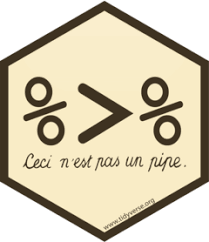

Data Wrangling:
Verbs
Day 07
{dplyr}
A package that transforms data
Implements a grammar of transforming tabular data
Part of the
tidyverse

Warm up
With your neighbors, identify the data verb (function) that does the following:
- Picks rows by their values
- Reorders the rows
- Picks variables by their names
- Creates new variables with functions of existing variables
Logical tests
For help:
?Comparison
| Syntax | Description |
|---|---|
x < y |
less than |
x > y |
greater than |
x <= y |
less than or equal to |
x >= y |
greater than or equal to |
x == y |
equal to |
x != y |
not equal to |
x %in% y |
group membership |
is.na(x) |
is NA (missing) |
!is.na(x) |
is not NA |
Your turn:
With your neighbors, use filter() to wrangle the nycflights23::flights data frame.
- Find all flights that had an arrival delay of two or more hours.
- Find all flights to MSP
- Find all flights that arrived more than two hours late, but left less than one hour late
- (if time) Find all flights that were delayed by at least an hour, but made up over 30 minutes in flight.
slice(.data, ...)
Extract (omit) rows by row number
Slicing flights data
Extracting rows 10 to 20
slice(flights, 10:20)# A tibble: 11 × 19
year month day dep_time sched_dep_time dep_delay arr_time sched_arr_time
<int> <int> <int> <int> <int> <dbl> <int> <int>
1 2023 1 1 547 545 2 845 852
2 2023 1 1 549 559 -10 905 901
3 2023 1 1 551 600 -9 846 859
4 2023 1 1 552 559 -7 857 911
5 2023 1 1 554 600 -6 914 920
6 2023 1 1 554 600 -6 725 735
7 2023 1 1 558 605 -7 719 750
8 2023 1 1 600 600 0 729 752
9 2023 1 1 600 600 0 745 755
10 2023 1 1 600 600 0 810 840
11 2023 1 1 603 605 -2 800 818
# ℹ 11 more variables: arr_delay <dbl>, carrier <chr>, flight <int>,
# tailnum <chr>, origin <chr>, dest <chr>, air_time <dbl>, distance <dbl>,
# hour <dbl>, minute <dbl>, time_hour <dttm>Slicing flights data
Omitting rows 100 to 1000
slice(flights, -c(100:1000))# A tibble: 434,451 × 19
year month day dep_time sched_dep_time dep_delay arr_time sched_arr_time
<int> <int> <int> <int> <int> <dbl> <int> <int>
1 2023 1 1 1 2038 203 328 3
2 2023 1 1 18 2300 78 228 135
3 2023 1 1 31 2344 47 500 426
4 2023 1 1 33 2140 173 238 2352
5 2023 1 1 36 2048 228 223 2252
6 2023 1 1 503 500 3 808 815
7 2023 1 1 520 510 10 948 949
8 2023 1 1 524 530 -6 645 710
9 2023 1 1 537 520 17 926 818
10 2023 1 1 547 545 2 845 852
# ℹ 434,441 more rows
# ℹ 11 more variables: arr_delay <dbl>, carrier <chr>, flight <int>,
# tailnum <chr>, origin <chr>, dest <chr>, air_time <dbl>, distance <dbl>,
# hour <dbl>, minute <dbl>, time_hour <dttm>select()
Extract columns by name or number
select(.data, ...)
Source: software carpentry
Storms data
glimpse(storms)Rows: 20,778
Columns: 13
$ name <chr> "Amy", "Amy", "Amy", "Amy", "Amy", "Amy",…
$ year <dbl> 1975, 1975, 1975, 1975, 1975, 1975, 1975,…
$ month <dbl> 6, 6, 6, 6, 6, 6, 6, 6, 6, 6, 6, 6, 6, 6,…
$ day <int> 27, 27, 27, 27, 28, 28, 28, 28, 29, 29, 2…
$ hour <dbl> 0, 6, 12, 18, 0, 6, 12, 18, 0, 6, 12, 18,…
$ lat <dbl> 27.5, 28.5, 29.5, 30.5, 31.5, 32.4, 33.3,…
$ long <dbl> -79.0, -79.0, -79.0, -79.0, -78.8, -78.7,…
$ status <fct> tropical depression, tropical depression,…
$ category <dbl> NA, NA, NA, NA, NA, NA, NA, NA, NA, NA, N…
$ wind <int> 25, 25, 25, 25, 25, 25, 25, 30, 35, 40, 4…
$ pressure <int> 1013, 1013, 1013, 1013, 1012, 1012, 1011,…
$ tropicalstorm_force_diameter <int> NA, NA, NA, NA, NA, NA, NA, NA, NA, NA, N…
$ hurricane_force_diameter <int> NA, NA, NA, NA, NA, NA, NA, NA, NA, NA, N…Subset of the NOAA Atlantic hurricane database best track data, https://www.nhc.noaa.gov/data/#hurda
select() helpers
select range of columns
select(storms, status:pressure)# A tibble: 20,778 × 4
status category wind pressure
<fct> <dbl> <int> <int>
1 tropical depression NA 25 1013
2 tropical depression NA 25 1013
3 tropical depression NA 25 1013
4 tropical depression NA 25 1013
5 tropical depression NA 25 1012
6 tropical depression NA 25 1012
7 tropical depression NA 25 1011
8 tropical depression NA 30 1006
9 tropical storm NA 35 1004
10 tropical storm NA 40 1002
# ℹ 20,768 more rowsselect every column but
select(storms, -c(status, pressure))# A tibble: 20,778 × 11
name year month day hour lat long category wind
<chr> <dbl> <dbl> <int> <dbl> <dbl> <dbl> <dbl> <int>
1 Amy 1975 6 27 0 27.5 -79 NA 25
2 Amy 1975 6 27 6 28.5 -79 NA 25
3 Amy 1975 6 27 12 29.5 -79 NA 25
4 Amy 1975 6 27 18 30.5 -79 NA 25
5 Amy 1975 6 28 0 31.5 -78.8 NA 25
6 Amy 1975 6 28 6 32.4 -78.7 NA 25
7 Amy 1975 6 28 12 33.3 -78 NA 25
8 Amy 1975 6 28 18 34 -77 NA 30
9 Amy 1975 6 29 0 34.4 -75.8 NA 35
10 Amy 1975 6 29 6 34 -74.8 NA 40
# ℹ 20,768 more rows
# ℹ 2 more variables: tropicalstorm_force_diameter <int>,
# hurricane_force_diameter <int>select columns that start with…
select(storms, starts_with("w"))# A tibble: 20,778 × 1
wind
<int>
1 25
2 25
3 25
4 25
5 25
6 25
7 25
8 30
9 35
10 40
# ℹ 20,768 more rowsselect columns that end with…
select(storms, ends_with("e"))# A tibble: 20,778 × 2
name pressure
<chr> <int>
1 Amy 1013
2 Amy 1013
3 Amy 1013
4 Amy 1013
5 Amy 1012
6 Amy 1012
7 Amy 1011
8 Amy 1006
9 Amy 1004
10 Amy 1002
# ℹ 20,768 more rowsselect columns whose names contain…
select(storms, contains("d"))# A tibble: 20,778 × 4
day wind tropicalstorm_force_diameter hurricane_force_diameter
<int> <int> <int> <int>
1 27 25 NA NA
2 27 25 NA NA
3 27 25 NA NA
4 27 25 NA NA
5 28 25 NA NA
6 28 25 NA NA
7 28 25 NA NA
8 28 30 NA NA
9 29 35 NA NA
10 29 40 NA NA
# ℹ 20,768 more rowsTry it:
Brainstorm as many ways as possible to select() the following columns from flight:
dep_timedep_delayarr_timearr_delay
arrange()
Order rows from smallest to largest
Arranging by wind speed
By default, arrange orders in ascending order
storms# A tibble: 20,778 × 13
name year month day hour lat long status category wind pressure
<chr> <dbl> <dbl> <int> <dbl> <dbl> <dbl> <fct> <dbl> <int> <int>
1 Amy 1975 6 27 0 27.5 -79 tropical d… NA 25 1013
2 Amy 1975 6 27 6 28.5 -79 tropical d… NA 25 1013
3 Amy 1975 6 27 12 29.5 -79 tropical d… NA 25 1013
4 Amy 1975 6 27 18 30.5 -79 tropical d… NA 25 1013
5 Amy 1975 6 28 0 31.5 -78.8 tropical d… NA 25 1012
6 Amy 1975 6 28 6 32.4 -78.7 tropical d… NA 25 1012
7 Amy 1975 6 28 12 33.3 -78 tropical d… NA 25 1011
8 Amy 1975 6 28 18 34 -77 tropical d… NA 30 1006
9 Amy 1975 6 29 0 34.4 -75.8 tropical s… NA 35 1004
10 Amy 1975 6 29 6 34 -74.8 tropical s… NA 40 1002
# ℹ 20,768 more rows
# ℹ 2 more variables: tropicalstorm_force_diameter <int>,
# hurricane_force_diameter <int>arrange(storms, wind)# A tibble: 20,778 × 13
name year month day hour lat long status category wind pressure
<chr> <dbl> <dbl> <int> <dbl> <dbl> <dbl> <fct> <dbl> <int> <int>
1 Bonnie 1986 6 28 6 36.5 -91.3 tropica… NA 10 1013
2 Bonnie 1986 6 28 12 37.2 -90 tropica… NA 10 1012
3 Charley 1986 8 13 12 30.1 -84 subtrop… NA 10 1009
4 Charley 1986 8 13 18 30.8 -84 subtrop… NA 10 1012
5 Charley 1986 8 14 0 31.4 -83.6 subtrop… NA 10 1013
6 Charley 1986 8 14 6 32 -83.1 subtrop… NA 10 1014
7 Charley 1986 8 14 12 32.5 -82.5 subtrop… NA 10 1015
8 Charley 1986 8 14 18 32.4 -82 subtrop… NA 10 1015
9 AL031987 1987 8 16 18 30.9 -83.2 tropica… NA 10 1014
10 AL031987 1987 8 17 0 31.4 -82.9 tropica… NA 10 1015
# ℹ 20,768 more rows
# ℹ 2 more variables: tropicalstorm_force_diameter <int>,
# hurricane_force_diameter <int>arrange(storms, desc(wind))# A tibble: 20,778 × 13
name year month day hour lat long status category wind pressure
<chr> <dbl> <dbl> <int> <dbl> <dbl> <dbl> <fct> <dbl> <int> <int>
1 Allen 1980 8 7 18 21.8 -86.4 hurricane 5 165 899
2 Gilbert 1988 9 14 0 19.7 -83.8 hurricane 5 160 888
3 Wilma 2005 10 19 12 17.3 -82.8 hurricane 5 160 882
4 Dorian 2019 9 1 16 26.5 -77 hurricane 5 160 910
5 Dorian 2019 9 1 18 26.5 -77.1 hurricane 5 160 910
6 Allen 1980 8 5 12 15.9 -70.5 hurricane 5 155 932
7 Allen 1980 8 7 12 21 -84.8 hurricane 5 155 910
8 Allen 1980 8 8 0 22.2 -87.9 hurricane 5 155 920
9 Allen 1980 8 9 6 25 -94.2 hurricane 5 155 909
10 Gilbert 1988 9 14 6 19.9 -85.3 hurricane 5 155 889
# ℹ 20,768 more rows
# ℹ 2 more variables: tropicalstorm_force_diameter <int>,
# hurricane_force_diameter <int>Try it:
Use arrange to answer the following questions:
- Which flights traveled the farthest?
- Which traveled the shortest?
- Which flights lasted the longest?
- Which lasted the shortest?
slice_min(.data, order_by, n)
select rows with n smallest values of a variable
slice_max(.data, order_by, n)
select rows with n largest values of a variable
Continuing storms example
Extracting storms with 3 highest wind speeds
slice_max(storms, wind, n = 3)# A tibble: 5 × 13
name year month day hour lat long status category wind pressure
<chr> <dbl> <dbl> <int> <dbl> <dbl> <dbl> <fct> <dbl> <int> <int>
1 Allen 1980 8 7 18 21.8 -86.4 hurricane 5 165 899
2 Gilbert 1988 9 14 0 19.7 -83.8 hurricane 5 160 888
3 Wilma 2005 10 19 12 17.3 -82.8 hurricane 5 160 882
4 Dorian 2019 9 1 16 26.5 -77 hurricane 5 160 910
5 Dorian 2019 9 1 18 26.5 -77.1 hurricane 5 160 910
# ℹ 2 more variables: tropicalstorm_force_diameter <int>,
# hurricane_force_diameter <int>Extracting storms with the lowest wind speed
slice_min(storms, wind, n = 1)# A tibble: 61 × 13
name year month day hour lat long status category wind pressure
<chr> <dbl> <dbl> <int> <dbl> <dbl> <dbl> <fct> <dbl> <int> <int>
1 Bonnie 1986 6 28 6 36.5 -91.3 tropica… NA 10 1013
2 Bonnie 1986 6 28 12 37.2 -90 tropica… NA 10 1012
3 Charley 1986 8 13 12 30.1 -84 subtrop… NA 10 1009
4 Charley 1986 8 13 18 30.8 -84 subtrop… NA 10 1012
5 Charley 1986 8 14 0 31.4 -83.6 subtrop… NA 10 1013
6 Charley 1986 8 14 6 32 -83.1 subtrop… NA 10 1014
7 Charley 1986 8 14 12 32.5 -82.5 subtrop… NA 10 1015
8 Charley 1986 8 14 18 32.4 -82 subtrop… NA 10 1015
9 AL031987 1987 8 16 18 30.9 -83.2 tropica… NA 10 1014
10 AL031987 1987 8 17 0 31.4 -82.9 tropica… NA 10 1015
# ℹ 51 more rows
# ℹ 2 more variables: tropicalstorm_force_diameter <int>,
# hurricane_force_diameter <int>Translating wind speed to km/hour
Most of the world uses kilometers instead of miles. We can calculate km/hr by using:
\[\text{kmh} = 1.60934 \times \text{mph}\]
storms <- mutate(storms, wind_kmh = 1.60934 * wind)select(storms, wind, wind_kmh)# A tibble: 20,778 × 2
wind wind_kmh
<int> <dbl>
1 25 40.2
2 25 40.2
3 25 40.2
4 25 40.2
5 25 40.2
6 25 40.2
7 25 40.2
8 30 48.3
9 35 56.3
10 40 64.4
# ℹ 20,768 more rowsTry it
Create a new column in flights giving the average speed of the flight while it was in the air. What are the units of this variable? Make the variable in terms of miles per hour.
Example
The Federal Aviation Administration (FAA) considers a flight to be delayed when it is 15 minutes later than its scheduled time.
flights <- mutate(
flights,
delayed = case_when(
dep_delay >= 15 ~ "Delayed",
dep_delay < 15 ~ "On time",
.default = "other")
)Your turn
Suppose that you don’t think the FAA gives enough information in their definition of a delayed flight, so you come up with the following delay categories:
dep_delay <= 0-> nonedep_delaybetween 1 and 15 minutes -> minimaldep_delaybetween 16 and 30 minutes -> delayeddep_delaybetween 31 and 60 minutes -> majordep_delayover 60 minutes -> extreme
Use mutate() and case_when() to create a delay_category variable in the flights data frame.
%>% or |>
“dataframe first, dataframe once”
Combine multiple operations with the pipe
Think “and then” when reading code

Using %>% or |>
%>%or|>passes result on left into first argument of function on rightChaining functions together lets you read Left-to-right, top-to-bottom
Using %>% or |>
filter():
filter(storms, status == "hurricane")becomes
storms %>%
filter(status == "hurricane")arrange():
arrange(storms, wind)becomes
storms |>
arrange(wind)Using %>% or |>
We can also build up a series of pipes.
We’re interested in the storms with the lowest wind speed that were still classified as hurricanes.
# A tibble: 5,100 × 14
name year month day hour lat long status category wind pressure
<chr> <dbl> <dbl> <int> <dbl> <dbl> <dbl> <fct> <dbl> <int> <int>
1 Blanche 1975 7 27 6 35.9 -70 hurrica… 1 65 987
2 Caroline 1975 8 30 0 23.3 -94.2 hurrica… 1 65 990
3 Caroline 1975 8 30 6 23.5 -94.9 hurrica… 1 65 990
4 Caroline 1975 8 30 12 23.7 -95.6 hurrica… 1 65 989
5 Doris 1975 8 31 0 34.9 -46.3 hurrica… 1 65 990
6 Doris 1975 8 31 6 34.8 -45.7 hurrica… 1 65 990
7 Eloise 1975 9 16 18 19.5 -68.4 hurrica… 1 65 1002
8 Eloise 1975 9 17 0 19.6 -69.2 hurrica… 1 65 997
9 Eloise 1975 9 22 6 24.8 -89.4 hurrica… 1 65 993
10 Faye 1975 9 26 0 26.5 -60 hurrica… 1 65 990
# ℹ 5,090 more rows
# ℹ 3 more variables: tropicalstorm_force_diameter <int>,
# hurricane_force_diameter <int>, wind_kmh <dbl>Using %>% or |>
We’re interested in the storms with the lowest wind speed that were still classified as hurricanes, that reached category 2.
# A tibble: 2,393 × 14
name year month day hour lat long status category wind pressure
<chr> <dbl> <dbl> <int> <dbl> <dbl> <dbl> <fct> <dbl> <int> <int>
1 Eloise 1975 9 22 18 26.5 -89.4 hurricane 2 85 980
2 Faye 1975 9 26 18 31 -63.1 hurricane 2 85 985
3 Faye 1975 9 28 0 38.4 -63.7 hurricane 2 85 985
4 Gladys 1975 10 3 6 43.7 -57 hurricane 2 85 960
5 Gladys 1975 10 3 12 46.6 -50.6 hurricane 2 85 960
6 Emmy 1976 8 26 18 27.7 -54.8 hurricane 2 85 976
7 Emmy 1976 8 27 12 30.9 -53.7 hurricane 2 85 975
8 Emmy 1976 8 28 12 33.5 -56.6 hurricane 2 85 975
9 Emmy 1976 8 31 12 35.1 -44.9 hurricane 2 85 977
10 Gloria 1976 9 30 6 32.2 -59.8 hurricane 2 85 971
# ℹ 2,383 more rows
# ℹ 3 more variables: tropicalstorm_force_diameter <int>,
# hurricane_force_diameter <int>, wind_kmh <dbl>Combining with ggplot
Pipes become especially useful when we combine them with ggplot():
Your turn
Chain the last two parts together, so that the resulting dataset contains both avg_speed and delay_category. Pipe this new dataset into ggplot() to answer the question “is there a relationship between average speed and how late a flight is delayed?”
If you have time, create a new graph which only contains flights to MSP.